有些人出于健康原因而成为素食主义者。我们已经解决了健康问题（第十五章）。
有些人成为素食者是因为他们不喜欢肉的味道。我们已经较为全面地解决味道问题了（第三、四、十七章等）。
有些人成为素食者是出于对地球肉食文化所产生的后果的担忧。我们已经解决了环境问题（第十一章）。
而大多数人成为素食者是因为他们觉得肉类消费从道义上讲是错误的。数学领域也有类似的情况吗？数学中有关于伦理道德的问题吗？
数学中的伦理道德
在漫长的岁月里，数学领域中有很多人的哲学立场具有明显的道德界定。一些人就什么才应被认定为“数”而争论不休，而另一些人则在争辩什么才是“证明”。
如今，拥有发展最完善的道德体系的数学家是构造论者。构造论者在他们的研究工作中，避免使用任何“非构造性”方法。如果一个数学证明采用的一个对象是不能明确构造出来的，那么这个证明就是非构造性的。
例如，假设我对数字n的定义如下：
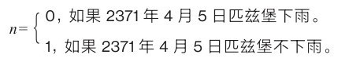
构造论者会说n还没有被明确定义，因为目前我们没有办法明确说出n是什么。它（在目前）不是可构成的。
但是我们不能说无论n是什么，它都小于2吗？毕竟n不是0就是1。
构造论者会说不，我们不能说n小于2。构造论者可能这样解释：“如果你能向我证明2371年4月5日匹兹堡会下雨，那么我们会知道n=0＜2。如果你能向我证明2371年4月5日不会下雨，那么我们就会知道n=1＜2。否则我们什么都不知道。”
构造论的主要问题（如果你不是一个构造论者）是它有限定性。构造论者不可能体会到数学中其实很可爱的那部分。让我来给你讲一个吧。
请你先回想一下
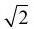
2是个无理数，即它不能以n/m表示（n和m是整数）[53]。现在，因为我们可以这样写：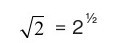
也就是说，我们有这样一种表达形式：
ab
两个数字a=2，b=½都是有理数，但ab是无理数。下面这个定理说明反推也是成立的。
定理：有无理数c和d，两者不是一定要不相同，这样一来cd就是有理数。
这是证明——能说服你吗？
证明：考虑到
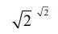
既是有理数也是无理数。如果是有理数，则一定存在无理数c和d，这样cd就是有理数，也就是说
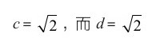
从另一方面讲，如果
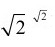
不是有理数，则cd就是无理数。既然这样，让c=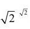
，和d=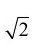
。这些都是无理数，而
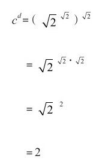
我们再次有了无理数c和d，这样cd是有理数。
证明完毕。如果
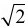
是有理数，我们会有1个c和1个d。如果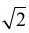
是无理数，我们会有1个c和1个d。因为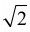
既是有理数也是无理数，所以我们证明了这个定理是对的。构造论者反对这个证明。他们坚持认为这个定理的证明必须推定一个无理数c和一个无理数d，这样cd才是有理数。在这个证明的结尾，我们没有明确的无理数c和d来证明cd是有理数[54]。
但是，你是怎么想的呢？这个推理是危险而不合法的吗？还是挺有趣可爱的？
我忍不住要给你们讲一讲我儿子七岁时发生的一件事。弗莱德、我妻子和我三个人正一起吃晚饭。弗莱德和我们讨论“其余的人”。他给其余的人下的定义是某人在某些方面和其他所有人不同。他说“我们都是其余的人。爸爸，你是其余的人，因为你在吃芝士汉堡，而我和妈妈在吃火腿汉堡。我是其余的人，因为我喝的是牛奶，而你和妈妈喝的是蔓越橘汁，而妈妈，你也是其余的人，因为你是唯一一个不是其余的人的人”。
我不是构造论者，但我总是想知道妈妈在哪一方面不同？
在任何领域讲伦理道德都很难。我们该回归到创造力上了。